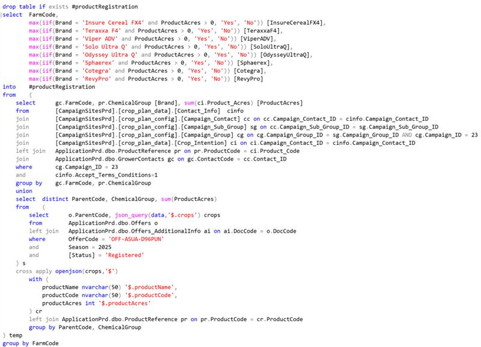

Thomas Martin
Data Reporting Assistant (Co-op)
January 2025 - April 2025
This work term report provides a detailed overview of my experience during the first of two work terms (as well as my third overall term) at Kenna, where I worked as a Data Reporting Assistant (Co-op) from January to April 2025.
Kenna is a marketing solutions company that aims to deliver a more unified customer experience. Kenna's mission is to help their clients (notably BASF, the largest chemical producer in the world) meet the rapidly changing demands of their customers in less time and effort than it would take on their own. Kenna is a "one-stop-shop" for their clients, with in-house teams such as planning, communications, digital solutions, data reporting, and much more.
Kenna has been generous in rehiring previous co-op students into new roles. I previously completed two terms as Data Collection Assistant (Co-op) in 2023 and was fortunate to join a different team for this term.
Throughout this work term, I had three main learning goals. These goals were: (1) improve my ability, knowledge, and understanding of SQL; (2) improve my ability to prioritize, manage, and organize tickets; and (3) improve my ability to lead and facilitate data reporting team meetings.
My first goal for this work term was to improve my ability, knowledge, and understanding of SQL, from basic to advanced queries and techniques. I wanted to bring my abilities closer to the level of the developers who were working on the same data pulls as I was.
I had a large sample of data pulls to work on this term, which gave me plenty of opportunities to strengthen my SQL skills. I focused on a few key practices: familiarizing myself with each new table to understand its role and structure; creating temporary tables to track how results change throughout a query; writing as much of the query as I could before looking at the developer's script; and when I did refer to the script, making sure not to follow it blindly, but instead working through each part to understand what it was doing and why.
By taking this approach, my skills improved significantly over the course of the term. Simple data pulls became more automatic and took much less time than they did at the start. I was also able to troubleshoot errors in complex pulls more efficiently and began spotting errors or flawed logic in developer scripts more frequently.
I will be carrying this learning goal into next term as well, since I have another four months of data pulls ahead. There is still more to learn and plenty of opportunity to continue building on the progress I made this term.
My second goal for this work term was to improve my ability to prioritize, manage, and organize data pulls over the course of a sprint. I wanted to complete all my tickets on time and maintain effective management of them throughout the week.
There were a few strategies I employed to accomplish this: inform the second QA person and stakeholder of any updates or missed delivery dates; familiarize myself with the criteria, complexity, and delivery date of each ticket at the start of the sprint; and front-load work at the start of the sprint, when possible, to avoid missing delivery dates.
Overall, I was fairly successful in achieving this goal. I had several close due dates, but I made sure to keep the second QA person informed. There was one sprint with four data pulls due at the same time, each requiring no overlap with the others. However, the ticket critera set by internal stakeholders kept changing, which required all the other tickets to be updated each time. By employing the strategies I mentioned above, I was able to stay organized and deliver the data pulls on time.
My third goal for this work term was to improve my ability to lead and facilitate data reporting team meetings. I wanted each meeting to run smoothly and to feel confident that it contributed positively to the team as a whole.
To support this goal, I focused on a few key practices: preparing by reviewing meeting notes and files beforehand; understanding the role of the meeting within the data reporting team as a whole; and making sure I understood both the what and the why behind each step during the meeting.
Overall, I was fairly successful at this, leading the Rollover Meeting each week. Next term, I will be taking on the Clean-Up Meeting instead.
My day-to-day activities were fairly consistent this term and structured quite differently from my time in Data Collection.
Most of my work and responsibilities centered around data pulls, typically for internal stakeholder requests or for email and mail communications with BASF customers. A developer would create a script for the pull, and I would QA the data using frontend or backend tools—either internal Tableau reports built for QA purposes or by writing my own backend SQL script. As the term progressed, I gravitated toward backend QA, as I found writing SQL more enjoyable and was able to get into a flow state much more easily.
I had a few miscellaneous tasks as well. One of them was QA monitoring, where I reviewed a Tableau report to ensure data accuracy, proper formatting, and to check for bugs. I also wrote QA queries for Tableau reports—SQL queries equivalent to specific sections of the report that could be used to quickly verify data accuracy.
Next term, my day-to-day activities will shift slightly; I will be doing more QA queries and will spend more time learning about the data reporting process by going through a report rollover and all the tasks associated with it.
Throughout my work term, I gained and refined several transferable skills that will be valuable in my future studies. The most significant of these is programming skills. My undestanding of SQL has improved, which I can apply to database-oriented courses or course projects that require it. Additionally, my debugging and other related skills have also improved.
Another important skill I developed was working within sprints and using scrum methodology, along with personal organization. I may start viewing my schoolwork in sprints when I return.
Overall, my first of two work terms as a Data Reporting Assistant (Co-op) at Kenna was a great experience that significantly contributed to my personal and professional growth. Throughout this work term, I had the opportunity to strengthen my SQL skills, as well as improve my time management, organizational skills, and collaboration. As I move forward academically and professionally, the skills and insights gained during this work term will serve as a strong asset in achieving future goals.
I would like to express my gratitude to the Data Reporting Team for welcoming me back to Kenna for a third and fourth term. Special thanks to Zora for working alongside me, and to Erin (the other Data Reporting Assistant co-op student) for helping me learn and settle into the team.